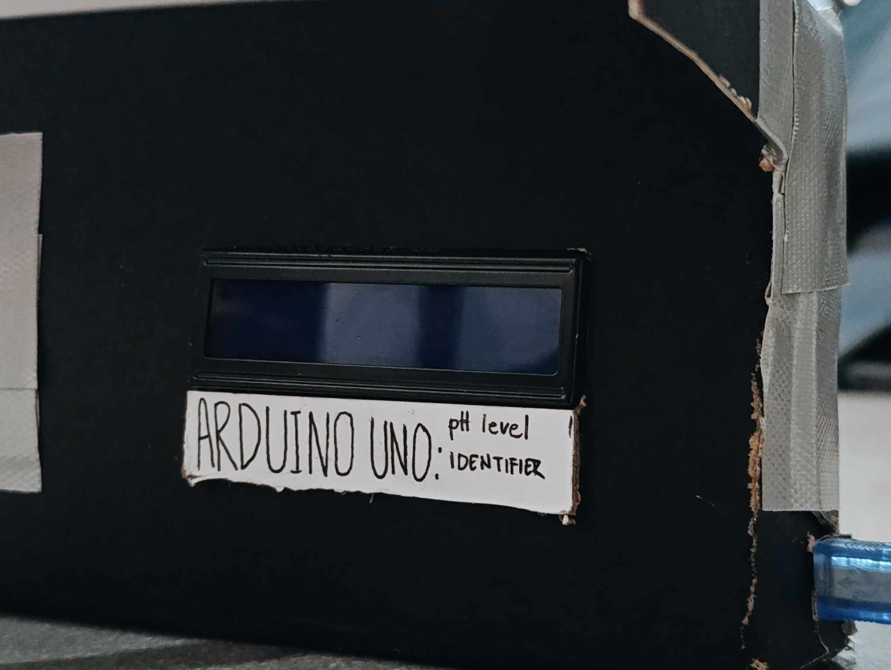

Project Images



Monitoring water quality easily and effectively with Arduino technology.
Watch VideoThis project presents an Arduino-based pH detector that evaluates the safety of water by measuring its acidity or alkalinity levels. With a clear LCD display and smart buzzer alerts, it informs users about the water's condition — whether it is neutral and safe, acidic, or alkaline and unsafe. Designed for simplicity and reliability, this device helps ensure water quality in various environments.
The pH sensor detects the voltage of the liquid sample and sends the data to the Arduino.
The Arduino calculates the pH value using a calibrated formula and determines the water's safety level.
The LCD screen shows the pH reading, while the buzzer signals if the water is unsafe (too acidic or too alkaline).